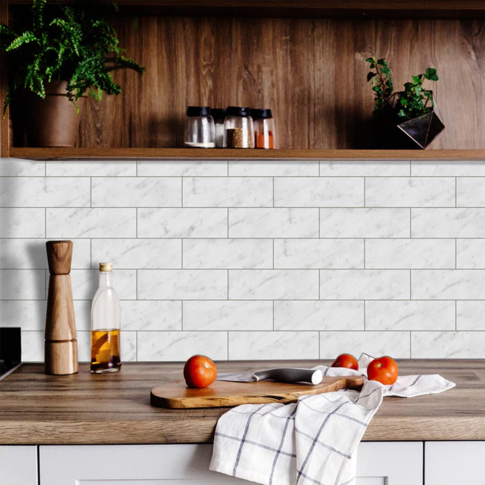

Teardown 14 / 17
乐高式磁吸可拆卸瓷砖

用户
旧房改造人群、租房党、喜欢频繁更换墙面风格的年轻人，短期软装项目
场景
厨房、卫生间墙面翻新；不想砸墙、不用水泥，快速铺贴、随时更换墙面
当前方案痛点
传统瓷砖施工要水泥、胶，铺贴麻烦；更换必须敲掉旧砖，噪音大、产生大量建筑垃圾；租房不能破坏原有墙面，无法贴普通瓷砖
创意方案
把瓷砖做成类似乐高的模块化结构，背面带磁吸吸盘，直接吸附在平整墙面上；不用胶水、不用敲墙，徒手就能装上、取下，随时更换款式
核心价值
把硬装变成软装，改造零破坏、无粉尘噪音；模块化可自由组合，低成本随时换风格；租房人群也可以实现瓷砖墙面效果
方案短板与边界
仅适用于平整光滑墙面；承重有限，不能用于地面；磁吸吸力有限，潮湿环境长期使用有脱落风险；单价高于普通瓷砖
底层设计思想
重构安装方式，打破硬装不可逆的固有认知；将一次性永久固定的产品，改造为模块化、可反复拆装复用的组件
同思想延伸案例
- 模块化磁吸地板
- 免打孔磁吸墙板
- 乐高式模块化收纳墙
AI 机会迁移
针对“改动成本高、不可回退”的痛点，把一次性固化方案改成可拆装、可回滚的模块化方案；降低用户试错成本，允许随时调整方案